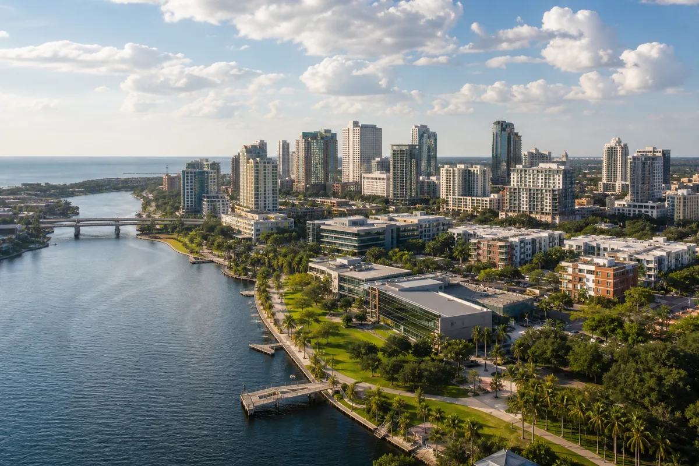
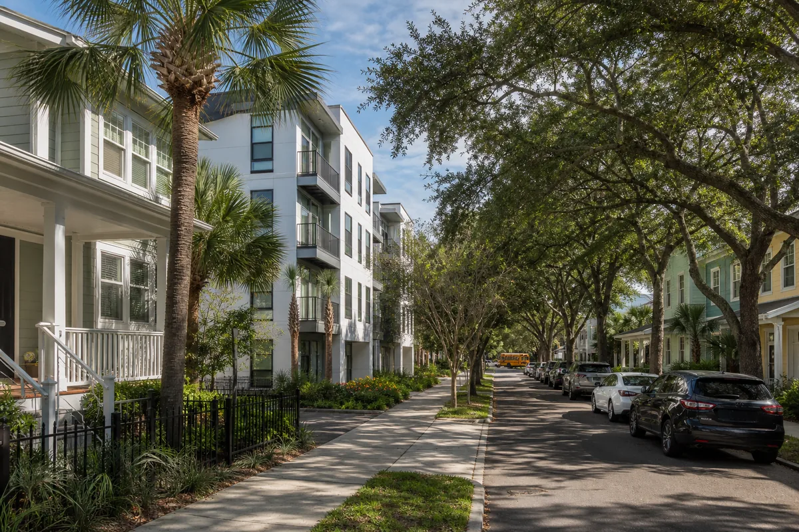
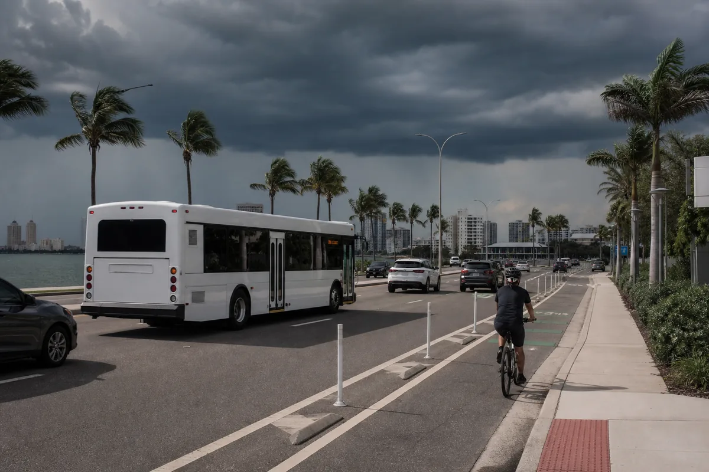

A consulta “morar em Tampa” pode significar três coisas diferentes: entender a cidade, calcular o orçamento ou decidir se ela combina com determinado perfil. Esta página tem uma função específica: registrar o retrato atualizado de Tampa em 2026, com dados que ajudam a pesquisar endereços e fazer perguntas melhores.
Para não repetir conteúdos, a planilha completa está em quanto custa morar em Tampa. A análise de perfil está em morar em Tampa vale a pena. E a comparação direta entre duas cidades fica em Orlando ou Tampa.
O que os dados atuais mostram sobre Tampa
A tabela abaixo combina fontes com metodologias e períodos diferentes. Ela não deve ser lida como uma única fotografia financeira. O Census descreve moradores e contratos observados entre 2020 e 2024; o Zillow acompanha anúncios disponíveis; o BLS trabalha com a área metropolitana, que é maior que a cidade.
| Indicador | Referência | Como interpretar |
|---|---|---|
| População da cidade | 413.554 em 2025 | Estimativa do Census; crescimento de 7,3% sobre a base de 2020. |
| Renda domiciliar mediana | US$ 75.475 | Census, 2020–2024; não representa salário garantido de recém-chegado. |
| Aluguel bruto mediano | US$ 1.701 | Census, 2020–2024; inclui contratos existentes e utilidades aplicáveis. |
| Aluguel pedido médio | US$ 1.995 | Zillow Rentals, 3 ago. 2026; todos os tamanhos e tipos anunciados. |
| Tempo médio até o trabalho | 24,8 minutos | Census, 2020–2024; sua rota pode ser muito diferente. |
| Pessoas nascidas fora dos EUA | 19,4% | Census, 2020–2024; não é uma estimativa da comunidade brasileira. |
O indicador mais atual de inflação regional do BLS mostrou alta de 1,9% em 12 meses no índice de Tampa–St. Petersburg–Clearwater até julho de 2026. Isso ajuda a acompanhar o ambiente econômico, mas não prevê quanto uma família específica gastará com aluguel, saúde ou carro.
Tampa e Tampa Bay não são a mesma coisa
Tampa é uma cidade no condado de Hillsborough. Tampa Bay é a região usada informalmente para falar de uma área muito maior, com cidades e comunidades em diferentes condados. St. Petersburg e Clearwater ficam no condado de Pinellas. Wesley Chapel fica no condado de Pasco. Brandon e Riverview ficam em Hillsborough, mas não são bairros da cidade de Tampa.
Essa distinção muda mais do que o nome no anúncio. Ela pode alterar:
- prefeitura e serviços responsáveis pelo endereço;
- distrito, escola atribuída e transporte escolar;
- rota até o trabalho e travessia de pontes;
- empresa de água, coleta e outras utilidades;
- zona de evacuação e informações de emergência;
- tempo até aeroporto, hospitais e rede de apoio.
Aluguel em Tampa em 2026: o que a média não conta
O Zillow Rentals mostrava média pedida de US$ 1.995 em 3 de agosto de 2026, somando todos os quartos e tipos de imóvel. A plataforma também indicava queda de US$ 175 em relação ao ano anterior. Isso é um sinal do estoque anunciado naquela data, não uma promessa de que um apartamento adequado à sua família custará esse valor.
A mediana de aluguel bruto do Census, de US$ 1.701 em 2020–2024, mede outra coisa. Ela inclui contratos já existentes e pode incluir determinadas utilidades. Comparar os dois números como se fossem equivalentes produziria uma conclusão errada.
Pesquise pelo número de quartos, CEP, prazo do contrato e distância da rotina. Some depósito, taxa de aplicação, seguro do inquilino, estacionamento, pet fee, utilidades e possível exigência de renda ou crédito. O guia de aluguel nos EUA explica esses custos de entrada.
Regiões e bairros: escolha pela rotina, não pela fama
A City of Tampa mantém mapas oficiais de bairros e serviços por endereço. Eles são um ponto de partida melhor do que listas que prometem “os melhores bairros”, porque permitem verificar limites, parques, escolas, zonas e estruturas próximas.
| Área usada na pesquisa | O que verificar | Confusão comum |
|---|---|---|
| Downtown e Channel District | Moradia vertical, estacionamento, caminhada e acesso ao trabalho. | Tratar a experiência urbana como padrão de toda Tampa. |
| Westshore | Aeroporto, escritórios, trânsito e conexão com pontes. | Ignorar ruído, horários de pico e custo por localização. |
| South Tampa | Limites do bairro, escola, risco de água e preço do endereço. | Achar que todo South Tampa oferece a mesma rotina. |
| Seminole Heights e West Tampa | Quadra, imóvel, serviços e deslocamento. | Escolher apenas por vídeos ou reputação geral. |
| New Tampa e Tampa Palms | Distância, escola, acesso viário e trabalho. | Subestimar o tempo até áreas centrais. |
| Brandon, Riverview e Wesley Chapel | Condado, escola, trajeto e governo local. | Apresentá-las como bairros da cidade de Tampa. |

Trabalho e salários: cidade e região usam recortes diferentes
O mercado de trabalho costuma ser divulgado para a área metropolitana Tampa–St. Petersburg–Clearwater. Por isso, uma estatística do BLS pode incluir empregos longe do endereço pesquisado. É importante olhar o mapa antes de interpretar “há vagas em Tampa” como “há vagas perto da minha casa”.
Em dados de maio de 2025 publicados em julho de 2026, o BLS estimou salário médio de US$ 31,96 por hora na área metropolitana, abaixo da média nacional de US$ 33,54. Grupos como gestão, computação e matemática e profissões jurídicas tiveram médias maiores; alimentação e limpeza/manutenção de áreas tiveram médias menores. São médias ocupacionais, não ofertas nem salários de entrada.
O painel econômico da City of Tampa reúne indicadores de empregos, imóveis e negócios usando fontes públicas e privadas. Para quem está planejando mudança, o método mais seguro é identificar o empregador ou setor, pesquisar salário para a ocupação e simular o trajeto. O guia sobre trabalhos para brasileiros nos EUA ajuda na preparação, sempre lembrando que trabalhar legalmente exige autorização compatível.
Transporte: existe HART, mas a rota precisa fechar
O HART mantém ônibus locais, rotas limitadas, HARTFlex e conexões com pontos como Downtown, aeroporto, Westshore, University Area e Brandon. O mapa do sistema vigente desde 7 de junho de 2026 mostra que há alternativas ao carro em determinados corredores.
Isso não significa que toda família consiga viver sem veículo. Casa, trabalho, escola, mercado e consulta podem estar em rotas e horários incompatíveis. Antes de escolher imóvel:
- simule o trajeto em dia útil e horário real;
- compare carro, ônibus e combinação com caminhada;
- verifique frequência e último horário da rota;
- inclua estacionamento, seguro, combustível e manutenção;
- teste pontes e vias expressas nos dois sentidos.
O tempo médio de 24,8 minutos do Census é uma estatística populacional. Ele não captura a experiência de uma família que cruza a baía, leva filhos à escola ou trabalha fora do horário comercial. Para montar a conta, veja quanto custa ter carro nos EUA.

Escolas: confirme a unidade vinculada ao endereço
O Hillsborough County Public Schools oferece School Locator e mapas de frequência para elementary, middle e high school no ano letivo 2026–2027. Limites podem mudar, e programas Choice seguem processos próprios. Não assine contrato baseado somente na frase “essa região tem escola boa”.
Consulte o endereço completo, a série da criança, transporte e calendário. Depois confirme com o distrito. Avaliações de terceiros podem ajudar a formular perguntas, mas não substituem visita, necessidade da criança e informação oficial. Veja também como matricular filho na escola nos EUA.
Furacão, inundação e evacuação: verifique duas zonas
Hillsborough County atualizou os mapas de evacuação em 2026 e mantém uma ferramenta de consulta por endereço. As zonas de evacuação vão de A a E e estão ligadas principalmente ao risco de storm surge durante emergências. Já a zona de inundação é uma classificação diferente, usada também em seguro e construção.
Um imóvel pode estar fora de uma zona de evacuação e ainda ter risco de inundação. O inverso também pode acontecer. Antes de alugar ou comprar, consulte a ferramenta do condado e o FEMA Flood Map Service Center. Pergunte ainda sobre histórico do imóvel, seguro do inquilino e plano da família.
Para preparação contínua, use o Guia Completo sobre Furacões na Flórida e o artigo sobre vento, enchente e cobertura de seguro. Em uma emergência, siga as autoridades locais e não dependa de um artigo para decidir se deve evacuar.
Checklist antes de enviar uma aplicação de aluguel
- Confirmar se o imóvel fica na City of Tampa ou em outra jurisdição.
- Pesquisar escola e transporte escolar pelo endereço.
- Simular trabalho, escola e mercado em horário de pico.
- Consultar aluguel total, depósito, taxas e utilidades por escrito.
- Cotar seguro do carro e seguro do inquilino.
- Verificar zona de evacuação e zona de inundação separadamente.
- Visitar a quadra de dia e à noite quando possível.
- Validar proprietário ou administradora antes de enviar dinheiro.
- Calcular renda líquida e reserva, não apenas salário bruto.
- Comparar pelo menos duas regiões antes de assinar.
Qual página usar para a próxima decisão?
| Sua dúvida | Próximo guia |
|---|---|
| Quanto preciso por mês? | Orçamento detalhado de Tampa |
| Tampa combina com meu perfil? | Vantagens, desvantagens e perfis |
| Tampa ou Orlando? | Comparativo permanente por rotina |
| Tampa ou cidades costeiras próximas? | St. Petersburg e Clearwater |
| Quero comparar toda a Flórida | Hub de cidades da Flórida |
Conclusão: trate Tampa como uma decisão por endereço
Os dados de 2026 mostram uma cidade populosa, inserida em uma região metropolitana grande e com mercado de aluguel, trabalho e transporte que varia muito por localização. O melhor próximo passo não é escolher “Tampa” no mapa: é testar um endereço contra trabalho, escola, carro, risco climático e orçamento.
Preserve as três perguntas separadas. Esta página acompanha os dados anuais; a página de custos monta a planilha; e o guia vale a pena morar em Tampa ajuda a decidir por perfil.
Planejando sua mudança?
Baixe o checklist gratuito e organize documentos, dinheiro, moradia, escola, carro e os primeiros passos nos Estados Unidos.
Perguntas frequentes
Qual é a diferença entre Tampa e Tampa Bay?
Tampa é uma cidade. Tampa Bay é uma região mais ampla que inclui Tampa e outras comunidades dos condados de Hillsborough, Pinellas e Pasco, como St. Petersburg e Clearwater. Endereço, escola, governo local e deslocamento mudam conforme o município e o condado.
Qual foi o aluguel médio anunciado em Tampa em agosto de 2026?
O Zillow Rentals informava média pedida de US$ 1.995 para todos os tamanhos e tipos de imóvel em Tampa em 3 de agosto de 2026. O valor representa anúncios disponíveis, muda com o estoque e não deve ser confundido com orçamento mensal completo ou preço garantido.
Brandon, Riverview e Wesley Chapel ficam dentro de Tampa?
Não. Brandon e Riverview ficam no condado de Hillsborough, enquanto Wesley Chapel fica no condado de Pasco. Elas fazem parte da rotina metropolitana de muitas famílias, mas não são bairros da cidade de Tampa.
Como descobrir a escola de um endereço em Tampa?
Use o School Locator e os mapas de frequência do Hillsborough County Public Schools para o ano letivo vigente. Depois confirme diretamente com o distrito, porque limites e programas podem mudar.
Zona de evacuação e zona de inundação são a mesma coisa?
Não. A zona de evacuação orienta possíveis ordens ligadas principalmente a storm surge em emergências; a zona de inundação é uma classificação de risco usada também em seguro e construção. O endereço deve ser verificado nas duas ferramentas oficiais.
Fontes consultadas
- U.S. Census Bureau QuickFacts — Tampa: população, renda, aluguel bruto, deslocamento e população nascida fora dos EUA.
- Zillow Rentals — Tampa: anúncios, média pedida e variação anual; consulta de 3 de agosto de 2026.
- BLS — Occupational Employment and Wages in Tampa: salários por grupo ocupacional, dados de maio de 2025 publicados em julho de 2026.
- BLS — CPI de Tampa, julho de 2026: variação regional de preços.
- City of Tampa Economic Dashboard e Neighborhood Maps: economia e consulta territorial.
- Hillsborough County Public Schools: School Locator e limites escolares vigentes.
- HART System Map: rede de transporte vigente desde junho de 2026.
- Hillsborough County — Evacuation Information e Evacuation Zones vs. Flood Zones: consultas e diferença entre zonas.
Aviso editorial: este artigo é informativo e foi revisado em 21 de agosto de 2026. Aluguel, emprego, escola, transporte, seguro e mapas podem mudar. Confirme cada dado para o endereço e a data da sua decisão. O conteúdo não substitui orientação imobiliária, financeira, jurídica, migratória, de seguro ou de emergência.